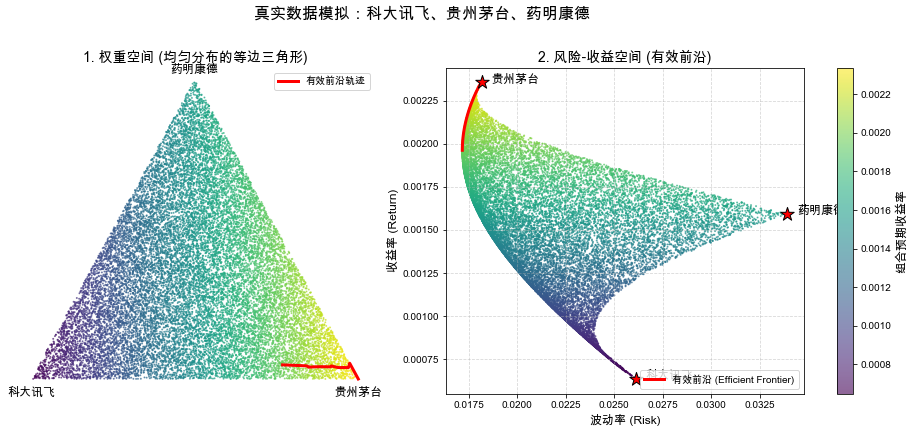

import numpy as np
import matplotlib.pyplot as plt
import scipy.optimize as sco
# 解决中文显示问题
plt.rcParams['font.sans-serif'] = ['Arial Unicode MS'] # Windows用黑体，Mac用户请改为 'Arial Unicode MS'
plt.rcParams['axes.unicode_minus'] = False
# 1. 导入真实数据
# 资产顺序：[科大讯飞, 贵州茅台, 药明康德]
returns = np.array([0.00063598, 0.00235508, 0.00159318])
# 对称协方差矩阵补全
cov_matrix = np.array([
[0.00068277, 0.00018373, 0.00032823],
[0.00018373, 0.00032969, 0.00023092],
[0.00032823, 0.00023092, 0.00115149]
])
# 2. 蒙特卡洛模拟：生成均匀分布的权重
n_simulations = 20000 # 增加点数让边缘更清晰
weights = np.random.dirichlet(np.ones(3), size=n_simulations)
# 3. 计算每个组合的收益率和波动率
# 组合收益率公式: \( \mu_p = \mathbf{w}^T \boldsymbol{\mu} \)
port_returns = np.dot(weights, returns)
port_risks = np.zeros(n_simulations)
for i in range(n_simulations):
# 组合风险公式: \( \sigma_p = \sqrt{\mathbf{w}^T \Sigma \mathbf{w}} \)
port_risks[i] = np.sqrt(np.dot(weights[i].T, np.dot(cov_matrix, weights[i])))
# ================= 新增：计算有效前沿 =================
def portfolio_volatility(w, cov_mat):
"""计算组合波动率"""
return np.sqrt(np.dot(w.T, np.dot(cov_mat, w)))
def get_efficient_frontier(returns_array, cov_mat, num_points=50):
"""通过二次规划求解有效前沿"""
# 寻找全局最小方差组合 (Global Minimum Variance Portfolio)
num_assets = len(returns_array)
args = (cov_mat,)
constraints = ({'type': 'eq', 'fun': lambda x: np.sum(x) - 1})
bounds = tuple((0, 1) for _ in range(num_assets))
min_var_result = sco.minimize(portfolio_volatility, num_assets * [1. / num_assets,],
args=args, method='SLSQP', bounds=bounds, constraints=constraints)
min_vol_return = np.sum(min_var_result.x * returns_array)
max_return = np.max(returns_array)
# 在最小方差收益率和最大收益率之间生成目标收益率序列
target_returns = np.linspace(min_vol_return, max_return, num_points)
frontier_weights = []
frontier_risks = []
for target in target_returns:
# 约束条件：1. 权重和为1; 2. 收益率等于目标收益率
# 约束公式: \( \sum w_i = 1 \) 且 \( \mathbf{w}^T \boldsymbol{\mu} = \mu_{target} \)
cons = ({'type': 'eq', 'fun': lambda x: np.sum(x) - 1},
{'type': 'eq', 'fun': lambda x: np.sum(x * returns_array) - target})
res = sco.minimize(portfolio_volatility, num_assets * [1. / num_assets,],
args=args, method='SLSQP', bounds=bounds, constraints=cons)
frontier_weights.append(res.x)
frontier_risks.append(res.fun)
return np.array(frontier_weights), np.array(frontier_risks), target_returns
# 获取有效前沿的权重、风险和收益率
ef_weights, ef_risks, ef_returns = get_efficient_frontier(returns, cov_matrix)
# 将有效前沿的权重映射到2D三角形平面
ef_x_triangle = ef_weights[:, 1] + 0.5 * ef_weights[:, 2]
ef_y_triangle = (np.sqrt(3) / 2) * ef_weights[:, 2]
# ======================================================
# 4. 绘图准备：将3D权重(w1,w2,w3)投影到2D等边三角形平面上
# 左下: 科大讯飞(0,0)，右下: 贵州茅台(1,0)，正上: 药明康德(0.5, 0.866)
x_triangle = weights[:, 1] + 0.5 * weights[:, 2]
y_triangle = (np.sqrt(3) / 2) * weights[:, 2]
# 5. 开始绘图
fig, (ax1, ax2) = plt.subplots(1, 2, figsize=(15, 6))
# 左图：权重三角形
scatter1 = ax1.scatter(x_triangle, y_triangle, c=port_returns, cmap='viridis', s=1, alpha=0.6)
# 绘制有效前沿在权重空间的轨迹
ax1.plot(ef_x_triangle, ef_y_triangle, color='red', linewidth=3, label='有效前沿轨迹')
ax1.set_title("1. 权重空间 (均匀分布的等边三角形)", fontsize=14)
ax1.text(0, -0.05, '科大讯飞', ha='center', fontsize=12, fontweight='bold')
ax1.text(1, -0.05, '贵州茅台', ha='center', fontsize=12, fontweight='bold')
ax1.text(0.5, np.sqrt(3)/2 + 0.02, '药明康德', ha='center', fontsize=12, fontweight='bold')
ax1.axis('off')
ax1.legend(loc='upper right')
# 右图：风险-收益散点图
scatter2 = ax2.scatter(port_risks, port_returns, c=port_returns, cmap='viridis', s=1, alpha=0.6)
# 绘制有效前沿曲线
ax2.plot(ef_risks, ef_returns, color='red', linewidth=3, label='有效前沿 (Efficient Frontier)')
ax2.set_title("2. 风险-收益空间 (有效前沿)", fontsize=14)
ax2.set_xlabel("波动率 (Risk)", fontsize=12)
ax2.set_ylabel("收益率 (Return)", fontsize=12)
ax2.grid(True, linestyle='--', alpha=0.5)
ax2.legend(loc='lower right')
# 标注三个单一资产在右图中的位置
asset_names = ['科大讯飞', '贵州茅台', '药明康德']
asset_risks = np.sqrt(np.diag(cov_matrix))
for i in range(3):
ax2.scatter(asset_risks[i], returns[i], color='red', marker='*', s=200, edgecolor='black', zorder=5)
ax2.text(asset_risks[i] + 0.0005, returns[i], asset_names[i], fontsize=12, fontweight='bold')
# 添加颜色条
cbar = fig.colorbar(scatter2, ax=[ax1, ax2], orientation='vertical', fraction=0.02, pad=0.04)
cbar.set_label('组合预期收益率', fontsize=12)
plt.suptitle("真实数据模拟：科大讯飞、贵州茅台、药明康德", fontsize=16, y=1.02)
plt.show()